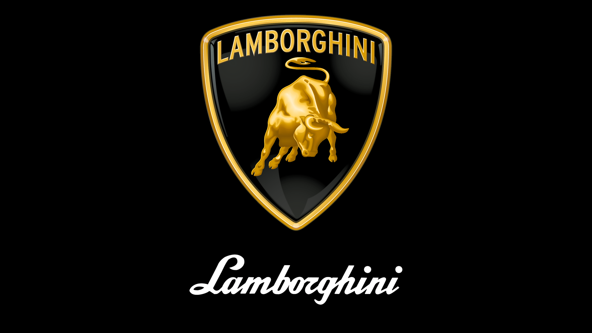

Lamborghini to włoski producent luksusowych samochodów sportowych, założony w 1963 roku przez Ferruccio Lamborghini. Marka Lamborghini stała się symbolem luksusu, wyrafinowanego designu i niesamowitej wydajności.
Historia Lamborghini jest pełna pasji i innowacji. Pierwszym modelem marki był Lamborghini 350 GT, zaprezentowany w 1964 roku. Od tego czasu Lamborghini kontynuowało produkcję niezwykłych samochodów sportowych, które zachwycają zarówno wyglądem, jak i osiągami.
Obecnie Lamborghini oferuje szeroką gamę modeli, w tym Lamborghini Urus - luksusowy SUV, Lamborghini Huracan - dynamiczny samochód sportowy oraz Lamborghini Diablo - legendarny supersamochód.